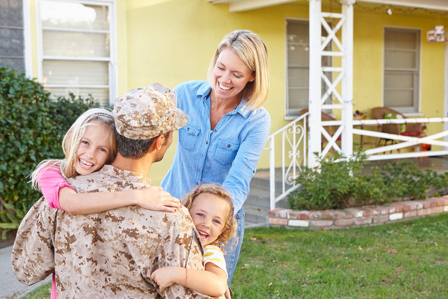
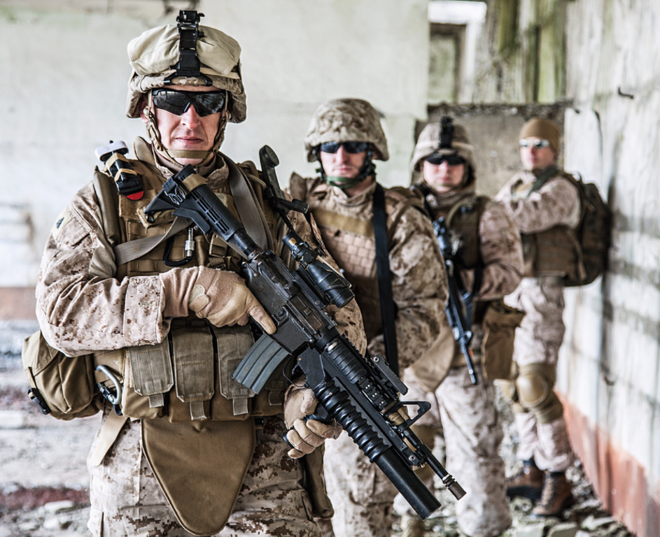

Excerpts of this blog were taken from previous documents
Be the change you want to see
 How It All Began... As Edward Pinckney was preparing to graduate from the Fuqua School of Business at Duke University in 2014, he was also planning to simultaneously launch his military platform several months later. Once available to the public, Military Transition would serve as the first of its kind, an online transitional platform for members of the armed forces, both veteran and active duty. While providing this service to the military community, Military Transition planned to enter the university recruitment market and the skilled business hiring segment as long term revenue streams for their operations.
However, he had to first answer the questions that plagued veteran transition for nearly 80 years. Since World War II government agencies, multiple business initiatives, and non-profit coalitions have attempted to solve this dilemma, what could Military Transition develop that they could not and was there a market for it? While being a veteran may have provided him insight, there were no clear solutions. As he grasped more of the systematic difficulties that inundated the transitional process, Military Transition’s business model, its future impact on veterans, and most important, the livelihood of his core team depended on the result – did Ed answer these questions right?
Background: Edward Pinckney
Ed grew up in Awendaw, South Carolina, a town of 3,000 people on the outskirts of the popular city of Charleston. His father, a Vietnam War veteran, was a Nuclear Inspector at the Charleston Naval Shipyard, and his mother was an eighth grade school teacher. From a young age, Edward had an affinity for military service. While in high school, he joined and eventually commanded the Air Force JROTC while being captain of the local high school track team. After graduating at the top of his academic class, Edward received his congressional nomination to attend the United States Military Academy where he came to embody the principles of West Point:
Throughout his military career, Ed would serve several deployments to Iraq and one deployment to New Orleans in the aftermath of Hurricane Katrina. However, the events of his final deployment would change his path from a career soldier to a social entrepreneur.
Deployment to the Middle East
During my last deployment to Iraq, I led an 11 man team that embedded, trained, and lived alongside a 500 unit Iraqi National Police Battalion, there equivalent of a national SWAT team. Despite being based in Baghdad, we were sent throughout the country to stop the overflow of sectarian violence that was ripping Iraq apart from city to city. Many brave soldiers lost their lives defending Iraq’s fragile democracy, both Iraqi and American.
Among them were two of my closest friends, CPT John Grassbaugh and CPT Rhett Schiller. As my duty to them, I spent my leave visiting their families and trying to support them. However, during my leave, the missions continued for my team, and the day I returned, they did for me as well. Within hours, I was briefed on a group of British hostages who were kidnapped from the Ministry of Electricity. Several hours after rejoining them, I was tasked to capture the insurgent cell leader responsible for their abduction. During our mission into the militia controlled center of Sadr City, we met a significant resistance, making it was critical that I order a medevac for my youngest soldier, Private Garduno. After the mission, despite being wounded myself, I convinced the PA to allow my medic to oversee my shrapnel injuries because It allowed me to return my soldiers. Duty, Honor, Country meant preserving and leading through adversity.
My final reminder of this came at the end of my deployment. As my team approached FOB Rustimayah, we came upon a disabled tank. As I dismounted, a shell shocked and injured lieutenant approached me speaking incoherently. At first, my medic and I struggled to determine what was wrong and then we looked at each other and immediately knew. None of the injuries were his. We then jumped on top of the tank to reach the crew in time. Yet, upon opening the cabin, my medic simply stopped me and said there was nothing to be done. It was there on top of a burning tank, in a surreal moment, that all the acts of my deployment finally hit me at once. I knew that the purpose of my life was not to have been the greatest soldier but to find a meaningful way to help all soldiers. In that moment, my life in combat had come to an end, but my search to find another way to uphold the principles of Duty, Honor, Country had just begun.
Following Edward’s deployment, he received several valor awards among them the Bronze Star Medal and the Purple Heart. He was then selected among the top captains Army wide in his year group to serve as an aide-de-camp to a Commanding General. This apprenticeship position matched junior leaders with senior officers and allowed them to see Army operations at a higher level. Here, Ed always approached it with the view of finding a way to make soldiers’ lives better.
During one monthly visit to the Warrior Transition Unit for combat injured soldiers in San Diego, he heard soldiers speaking about the difficulties transitioning out of military service. However, before Edward helped soldiers on an individual basis, he realized the systematic problems that were inherent in the transitional process that every soldier encountered. Ed realized that he had found his niche. Though not on the battlefield, Ed found another way to lead soldiers through a different type of adversity. He could develop a way to help soldiers transition out of the military service and onto the next chapter of their lives. Finally, he found his way to help soldiers and the first evolution of Military Transition had begun.